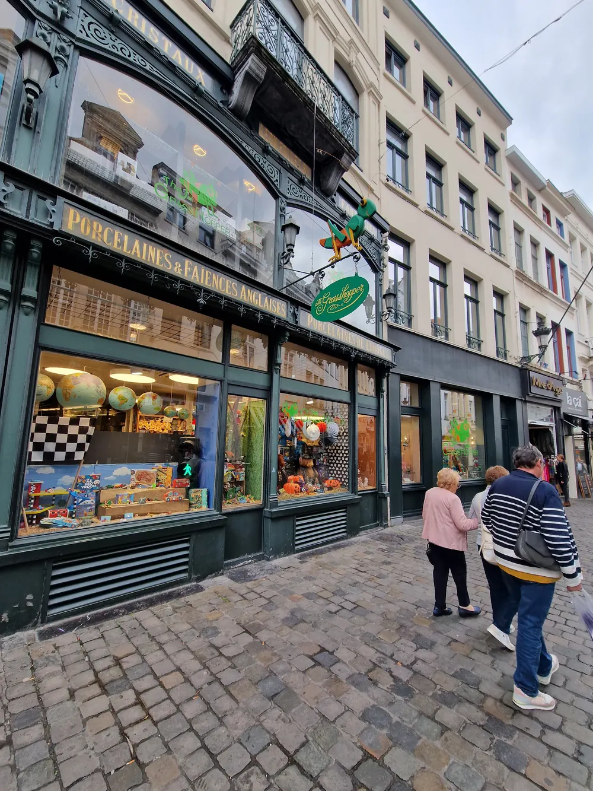

Qui sommes-nous ?
The Grasshopper possède deux magasins physiques à Bruxelles et à Louvain. La toute première Grasshopper a été fondée par une mère souhaitant rassembler des jouets de qualité, des jeux, des gadgets amusants et de la décoration pour enfants venus du monde entier. Pour découvrir ces produits et rendre visite à nos fournisseurs, nous participons chaque année à différentes foires nationales et internationales.
Dans nos magasins, nous proposons plusieurs milliers de produits différents, ce qui rend impossible la mise en ligne de tout notre assortiment. Avez-vous vu quelque chose dans l'un de nos magasins qui n'est pas disponible en ligne ? N'hésitez pas à nous envoyer un e-mail !


